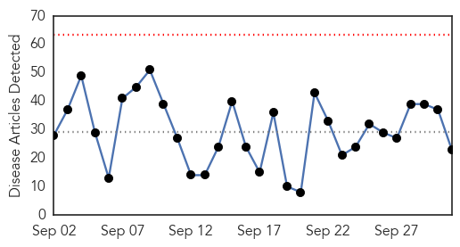

30 Day Trends
Web: 0 alerts, 0 warnings
Twitter: 0 alerts, 0 warnings
Top Articles:
- 1.000
- UH researcher’s book addresses, analyzes Ebola epidemic
- 0.999
- Mānoa: UH researcher's book addresses, analyzes Ebola epidemic
- 0.999
- International Cooperation the Key to Stopping Ebola
- 0.999
- World Health Organization Declares Liberia Ebola-Free Once Again After The Outbreak’s Re-emergence In June : World : koreaportal
- 0.993
- Speaker sheds light on Ebola outbreak – Vidette Online
- 0.991
- Is SA ready for a return of Ebola?
- 0.985
- Surviving Ebola Is Just the First Step
- 0.984
- The cost-effective way to protect against future Ebola outbreaks
- 0.983
- Ebola outbreak could have been mitigated, responder says
- 0.978
- First suspected Ebola case in Myanmar
- 0.951
- Kids With Ebola, Bird Flu Or TB? Texas Children's Hospital Will Be Ready
- 0.951
- Kids With Ebola, Bird Flu Or TB? Texas Children's Hospital Will Be Ready
- 0.938
- "It could have been prevented": Ebola Warrior speaks in the Twin Cities
- 0.938
- Nigerian carrier Arik to resume flights to Liberia next week
- 0.936
- Public advised against complacency on Ebola
- 0.917
- Chip-based technology enables reliable direct detection of Ebola virus
- 0.872
- Mobile Radio Skits Raise Ebola Awareness in Sierra Leone - Sierra Leone
- 0.849
- Cuba Headlines – Cuba News, Breaking News, Articles and Daily Information
- 0.739
- Sierra Leone: Sierra Leone Remote Monitoring Update September 2015
- 0.727
- OSF St. Joseph Medical Center Prepping for Pandemic
- 0.623
- Africa Information
- 0.593
- ‘Nigeria can soar higher health wise’
- 0.542
- UN, Gates Foundation Collaborate on Primary Health Care, Malaria
Top Tweets:
- 0.818
- Ebola outbreak could have been mitigated responder says - Bloomington Pantagraph http://t.co/Qv4UMjrxGZ ebola EVD
- 0.799
- Kids With Ebola Bird Flu Or TB? Texas Children's Hospital Will Be Ready - Capital Public Radio News http://t.co/8D8QQEG0C3 ebola EVD
- 0.777
- RT: Dr Lawal Bakare - that started talking about the Ebola - Africa Story . @africansmatter SABAAGM2015
- 0.774
- Outbreak tails can be looooooong: West African Ebola outbreak drags on with 4 new cases in Guinea. http://t.co/jvvmaRQnbc
- 0.757
- Speaker sheds light on Ebola outbreak - Vidette Online http://t.co/MqKbRFl3a0 ebola EVD
- 0.706
- NewLink wins $8.1M from DOD to advance Ebola vaccine - FierceVaccines http://t.co/i7lOvRHtir ebola EVD
- 0.648
- The Body Collectors of the Ebola Epidemic https://t.co/R8RSLX3MHQ
- 0.593
- .@WHO Ebola Emergency Committee meets today for 7th time. Not expecting they will say Ebola is no longer an emergency. Not till it's done.
- 0.565
- RT: SHOWCASE: @EbolaAlert contributed 1.8M of 2M impressions for SABAagm2015 science ebola media @PublicMediaPMA http://…
Web/News Articles
Tweets

Article Locations

Article Confidences